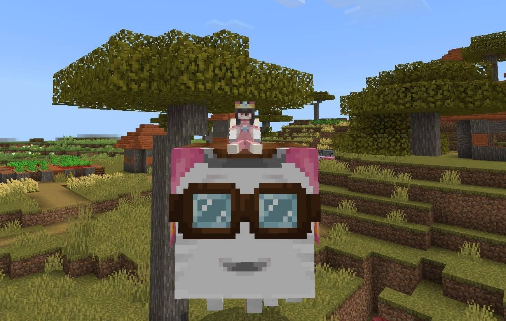
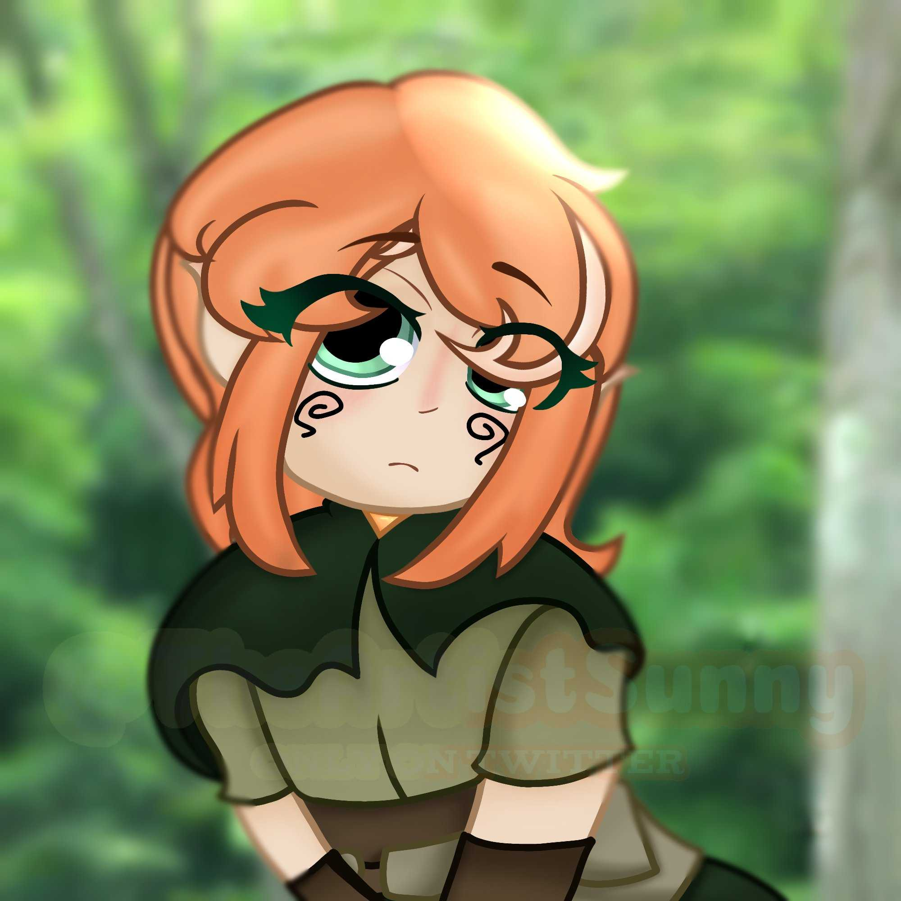
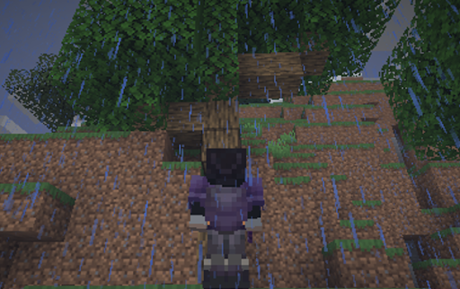
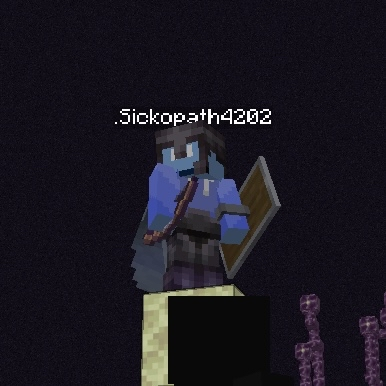
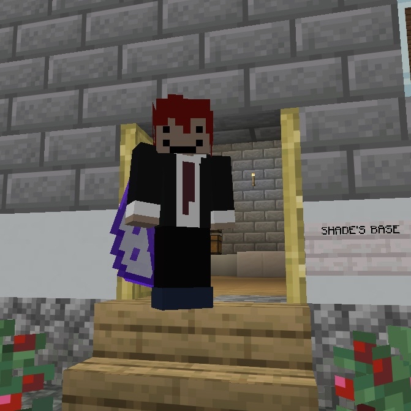

Princess Sonya's very first happy ghast.
“Asking for help doesn't make you weak!”
A calm, yet supportive girl who was once royalty. She enjoys helping others, being completely selfless — well that's what she hopes she seems. In contrast to her cheery, selfless demeanor, she can be selfish and harsh at times unintentionally and intentionally.
Sonya to FC (Best Friend)
“He's so kind! He let me stay in this server after hearing my story. If it wasn't for him, I'd be dead by now. I'm so grateful to meet a person like him! He's actually kinda smart too! In his own ways....”
Sonya to Alex (Friend) “He’s so nice! He gave me a 10% discount in his honesty shop. I also have this maternal feeling whenever I'm with him, he reminds me of a younger sibling.”
Sonya to MissPinkFish (Friend) “She is full of joy and whimsy, and is my knight. She is one of my favorite knights out of everyone! She's also very chill.”

An illustration of Sunny, drawn by the person who plays her.
Disclaimer: This is an old page. The new one cannot be retrieved as of now.
“I wonder what adventure awaits today!”
An energetic elf, enthusiastic about adventure. She tends to be a bit clueless at times, but is obviously trying!
Sunny to Imprx (Assigned Partner)
“I don't know him too well yet, but he seems like a really kind person! I wonder what adventures with him would be like...”
Sunny to Two (Close-ish)
“... he's, uhm, kind of annoying at times because he steals my stuff... but I'm sure he doesn't mean anything bad by it!”
Sunny to FC (Friend)
“Really glad for his help..!! I wouldn't have made it this far in my adventures without him, hehe...”

PLACEHOLDER
“You should always prioritize your own well-being over others.”
gifted_tragedian is in a way, failed_comedian's opposite. She tends to stay out of action and remains on the sidelines, and only participates when the risk is low, she can benefit or just for her entertainment. Other than that, she often keeps to herself and avoids committing in friendships and alliances.
Tragedian to FC (Close Friend)
“FC is great!”
Alex to Sonya (Friend)
“Sonya is a nice friend because she is optimistic and I think of her as an older sister figure in Minecraft. I would love to collaborate with her in some projects for the betterment of the server.”
Alex to ShNsha (Disliked)
“I don't think of him as an enemy but he does get pretty annoying. I still feel sorry for the sugarcane farm incident. I also stay away from him because he's a danger to me and Marcus, my friend.”

A photo of failed_comedian looking at a... tree?
“Assist your allies, but ensure that they're always inferior to you.”
Sticking true to his name, he really is a failed comedian — making others laugh at him instead of with him. He’s also the owner and creator of the Roulette SMP, making him the richest and most powerful player in the server. Besides the titles, he’s a pretty chill and friendly guy.
FC to BK (Friend, Most Trusted)
“He's barely talked about despite having a lot of potential. He can be a builder, a leader, he knows a bit of redstone, he's a command block master... a lot more.”
FC to Sonya (Best Friend)
“She's creative, unique, and smart. I think we'd make a good team.”
FC to Alex (Co-Owner, Friend, Son, Most Trusted)
“I didn't really think much of him until the elections started. A lot of people don't see how great my guy actually is. Most of the projects in the server are issued by him; and they're often projects that actually benefit not just him but everyone! I guess you could call him Alexander The Great... yeah that wasn't funny...”

A photo of Alex overlooking the end, taken by FC.
“As a leader, you help people grow out of their comfort zone.”
skyalexxx is a player who likes to play as a leader. He thirsts for power so he can gain sight on everything, and succeeded in his plan by being elected as a co-owner. He likes to think logically and is a friendly guy.
Alex to FC (Friend and Partner)
“FC is a just guy, he always chooses what works best for the members and we share mutual interests. I think he would be a great partner in my plans for the server.”
Alex to Sonya (Friend)
“Sonya is a nice friend because she is optimistic and I think of her as an older sister figure in Minecraft. I would love to collaborate with her in some projects for the betterment of the server.”
Alex to ShNsha (Disliked)
“I don't think of him as an enemy but he does get pretty annoying. I still feel sorry for the sugarcane farm incident. I also stay away from him because he's a danger to me and Marcus, my friend.”

A photo of Shade in his base.
“Life is a game of chess. You must play smartly in life, and never overthink, or you will overlook your checkmate.”
One of the server's greatest builders. He's somewhat detached from the other members of the server... what'd you expect from a writer?
Shade to FC (Friends)
“An intriguing person, and a lot more too. There lies the road to greatness, and he has the potential to walk on it.”
Shade to Hypii (Assigned Partner)
“A builder, nothing more. We have a great project to be made.”
Shade to Sunny (Acquaintances)
“She seems… interesting, in a sense. I wonder what things may be built with her.”